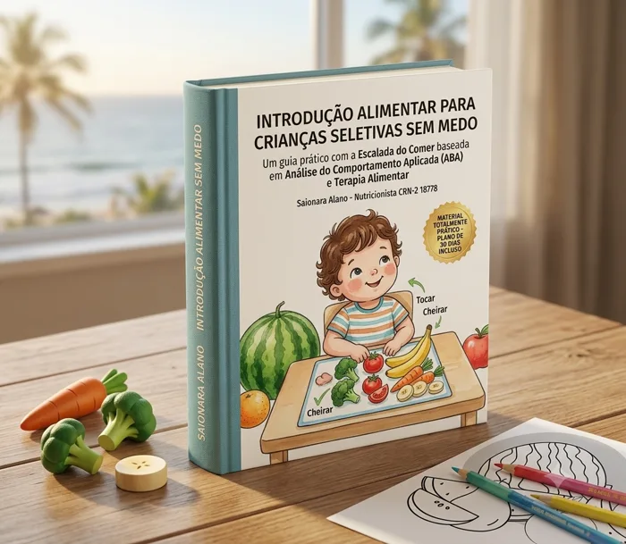

A criança entrou na fase de neofobia, o medo de provar qualquer alimento novo.
Método passo a passo para pais e cuidadores
Transforme a hora de comer em um momento de paz, descoberta e sem choro
Chega de se sentir perdida com a seletividade alimentar. Eu te ensino, passo a passo, como conduzir a aproximação da criança com os alimentos usando a Escalada do Comer, de forma prática, respeitosa e sem pressão.
Você não precisa obrigar. Precisa saber como conduzir.
- Guia prático com 32 etapas da Escalada do Comer
- Plano de atividades lúdicas na prática
- Para crianças com seletividade, TEA e TDAH
- Receitas, materiais para colorir e diários
Acesso imediato no e-mail
Garantia de 7 dias
Material 100% prático

01 · Antes de tudo
Se a refeição virou negociação, o que falta não é esforço
A seletividade alimentar tem nome, tem causa e tem caminho. O que costuma faltar em casa é um roteiro para seguir na hora em que a criança empurra o prato.
O prato aceita pouca variedade: poucas frutas, quase nenhuma verdura, carne só de um jeito.
Choros, birras e negociações desgastantes tomam conta do almoço e do jantar.
Com TEA ou TDAH entram a rigidez com cores e marcas e a distração que esvazia o prato.
A Escalada do Comer troca a pressão por etapas
Em vez de insistir para a criança comer de uma vez, o método quebra o caminho em degraus pequenos o bastante para ela avançar sem susto, com estratégias fundamentadas na Análise do Comportamento Aplicada, a ABA.
Do tolerar o alimento na mesa até comer de verdade, um passo de cada vez.
Tolerar
32 etapas
Comer
02 · O que você recebe
Um guia principal e três materiais de apoio para usar no mesmo dia
O kit chega completo: o método explicado para quem nunca ouviu falar em ABA, e os materiais prontos para imprimir e aplicar na próxima refeição.
Material principal
E-book Introdução Alimentar sem Medo
O guia completo da Escalada do Comer, escrito na linguagem de quem está com a criança na mesa.
- As etapas da Escalada do Comer, uma a uma
- Princípios da ciência ABA na hora da refeição
- Mitos e verdades sobre a recusa alimentar
- Estratégias para seletividade, TEA e TDAH
- Plano de atividades lúdicas na prática
Vendido separado por R$ 137,90
Acompanham o guia
Receitas Fáceis & Nutritivas
Preparações adaptadas para crianças seletivas: panquecas, bolinhos de legumes, sorvetes naturais e muffins fáceis.
Separado R$ 24,90
Comida de Verdade, para colorir
Caderno de atividades e desenhos de frutas e vegetais para a criança pintar e criar familiaridade visual sem a pressão de comer.
Separado R$ 24,90
Cards visuais & planners de rotina
Diário alimentar, checklist semanal, escala de progresso e cartões visuais para pregar na geladeira e acompanhar cada conquista.
Separado R$ 8,90
Tudo em PDF, para imprimir
Os quatro materiais chegam em alta resolução, prontos para impressora comum ou gráfica, e ficam com você sem prazo de validade.
Incluído
Comprados um a um, os quatro materiais somam R$ 196,60. No kit completo você leva todos juntos.
R$ 67,90 à vista ou em até 12x
03 · Identificação rápida
Este kit foi feito para o seu filho?
O material atende tanto a criança na fase típica de recusa quanto a criança com hipersensibilidade ou perfil atípico. Veja em qual coluna você se reconhece.
Crianças com seletividade típica
- Crianças de qualquer idade que entraram na fase de neofobia, o medo de provar novos alimentos.
- Crianças que aceitam pouca variedade de frutas, verduras ou carnes.
- Famílias que enfrentam choros, birras ou negociações desgastantes na hora do almoço ou do jantar.
Crianças atípicas, TEA e TDAH
- Crianças no Transtorno do Espectro Autista com forte rigidez comportamental ou sensibilidade a cores e marcas.
- Crianças com TDAH que se distraem facilmente e perdem o interesse no prato rapidamente.
- Famílias que procuram estratégias fundamentadas na Análise do Comportamento Aplicada, a ABA.
Para quem mais é indicado? Pais, mães, avós, babás, educadores e profissionais de saúde, como nutricionistas e terapeutas, que querem ter em mãos um guia prático e materiais prontos para aplicação diária.
04 · Quem escreveu
Quem criou este material
05 · Quem já foi atendido
O que as famílias dizem sobre o atendimento da Saionara
Excelente nutricionista, muito cuidadosa com suas restrições alimentares e problemas de saúde.
Parabéns pelo excelente trabalho, uma profissional muito competente e dedicada.
Muito bom atendimento, gostei muito. Desde a recepção até a consulta, a nutri Saionara foi muito atenciosa, tirou todas as minhas dúvidas e me ajudou no que eu precisava.
És uma excelente profissional, super dedicada e disposta a ajudar.
Adorei, profissional muito atenciosa. Voltarei outras vezes para acompanhamento.
Uma nutri maravilhosa e muito atenciosa.
Avaliações publicadas no perfil do Google da Dra. Saionara Alano.
06 · Dúvidas frequentes
Tudo o que você precisa saber antes de garantir o seu material
Como vou receber os e-books?
O acesso é digital e imediato. Assim que o pagamento é confirmado, você recebe o link de download de todos os PDFs no seu e-mail e no seu WhatsApp.
Posso imprimir os materiais em casa?
Sim. O livro de colorir, os checklists, os planners e os diários de conquistas foram formatados em alta resolução, então você pode imprimir em impressora comum ou levar a uma gráfica.
Funciona para crianças com TEA e TDAH?
Sim. O e-book foi escrito com foco em Análise do Comportamento Aplicada e em sensibilidade sensorial, sendo indicado para o perfil atípico e promovendo previsibilidade visual.
Como funciona a garantia de 7 dias?
Você tem 7 dias inteiros para ler os e-books e testar o método em casa. Se sentir que não atendeu às suas expectativas, devolvemos 100% do valor pago, sem burocracia.
Ficou com alguma dúvida que não está aqui? Falar com a Saionara no WhatsApp
Condição especial por tempo limitado
Comece hoje a transformar as refeições do seu filho
Você recebe o kit completo no e-mail em poucos minutos e já pode aplicar a primeira etapa na próxima refeição.
Quero comprar agora por R$ 67,90Acesso imediato · garantia de 7 dias · em até 12x no cartão